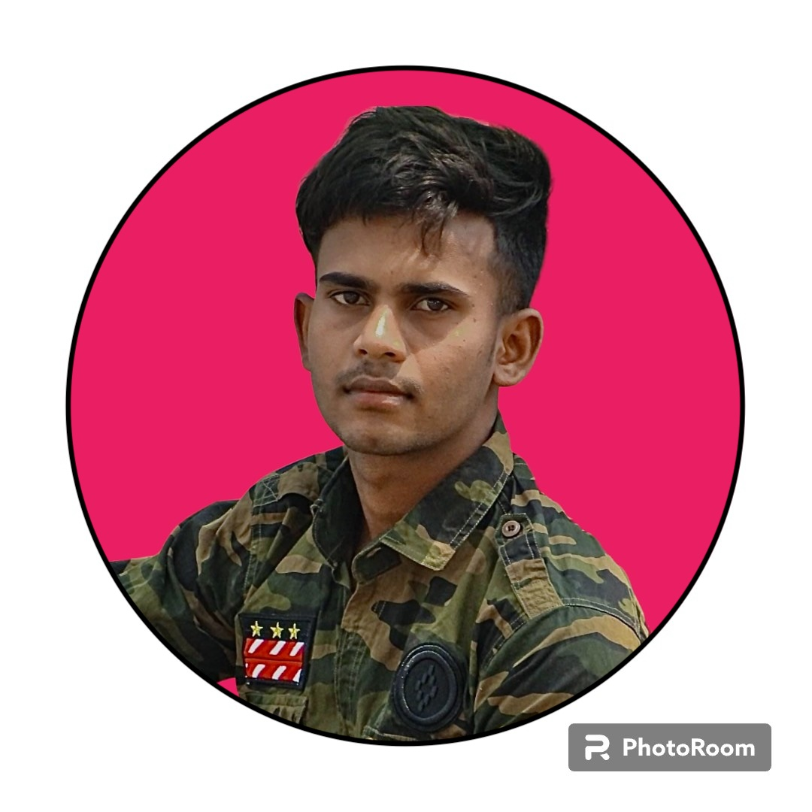

Sumit Raj
Phone:+1-573-587-3685 Email:Sraj41707@gmail.com github Linkedin
Summary:
I am a passionate web developer with a solid background
in Java programming. I've successfully completed my
learning in Java and am currently enhancing my skills
in Data Structures and Algorithms.My journey in web development
has equipped me with the ability to build efficient and
dynamic applications. Looking ahead, I am excited to dive into the
world of AI and Machine Learning, where I can combine my
existing skills with new technologies to contribute to innovative projects.
Education:
B.N Collegiate School Patna,India(2020-2022)
- Achieved an outstanding score of 81% on completion of High School
- During the study, Participate in lots of extracurricular activities. for eg; cricket, dance..
- Host a lot of campaign and School show
Southeast Missouri state university Cape Girardeau,United states(2023-Present)
- Currently have a good GPA of 3.5
- Study a different programming language in the university, for eg; java, python, linux, c++
- Currently as a student, try to gain a lot of university experience, to excel the future.
Skills:
Technical Skills:
Java, Python, Html, CSS, Javascript, Data structure and Algorithm, Ms Excel, Ms word, Linux
Non Technical Skills:
Communication skill, Time management, Problem solving
Experience:
Summer Operation Assistant(SEMO) Residance hall(SEMO)(May 2024 - Aug 2024)
- Assisted in coordinating and managing daily operations during the summer session.
- Provided support to faculty and staff, ensuring smooth execution of university programs and activities.
- Managed administrative tasks, including scheduling, documentation, and communication.
- Contributed to the organization and execution of university events and functions
Freelance Web developer Self Employed(May 2023 - present)
- Built and maintained websites for various clients, ensuring high performance, security, and responsiveness.
- Managed website content, updates, and troubleshooting to ensure smooth operation.
- Ran advertising campaigns to enhance client business visibility and engagement.
- Collaborated with clients to understand their business needs and deliver customized web solutions.